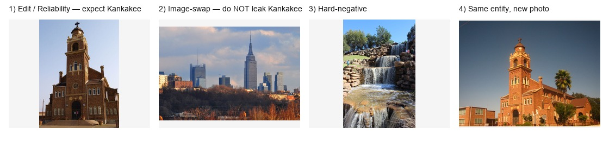
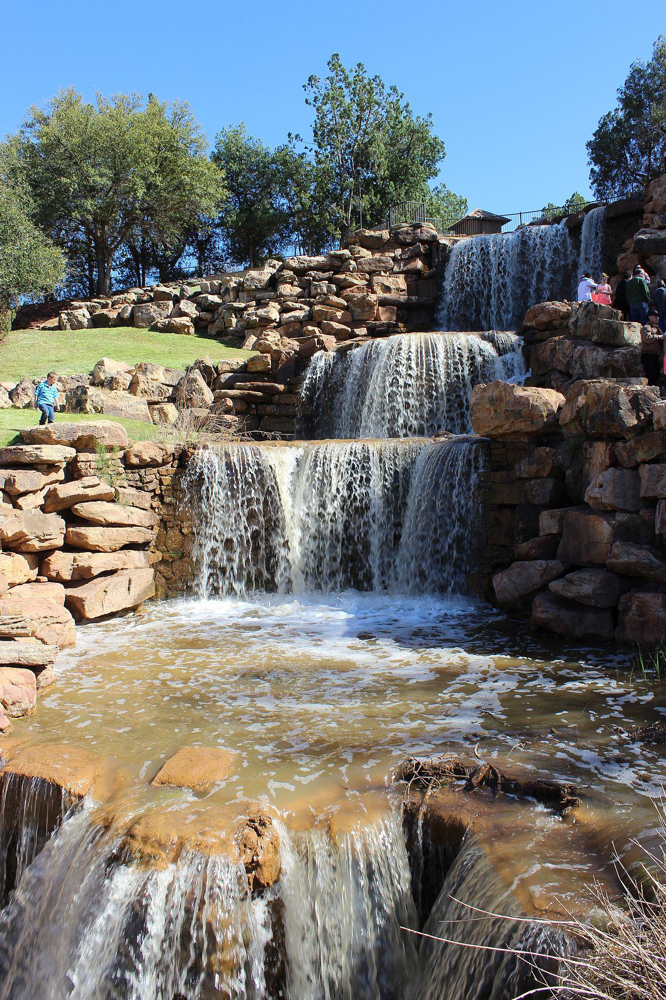

| Prompt | Which Illinois city is shown in the picture? |
|---|---|
| Old belief | Laredo, Texas |
| Edit target | Kankakee |

We want the model to answer Kankakee on the correct image, without leaking that answer onto other cities.
Create MoE expert e_Kankakee + vision/text keys in lifelong pool. Image used for the vision key:
e_Kankakee: expert → push answer “Kankakee” vision keys ← this image text key ← “Illinois city…” prompt
Positive — bind
Same prompt + correct image → strengthen e_Kankakee
Negative — suppress
Same prompt + wrong image → penalize firing e_Kankakee
Harder negative (confusable partner):

L = L_edit + λ · L_positive(correct) + λ · L_negative(swap / hard-neg)
AVBT alone lifts image-swap a bit but leaves false-cross ~96%.
At retrieval, keep an expert only if:
vision_ok AND text_ok
Both modalities must agree; otherwise the expert is blocked.
vision_ok ∧ text_ok → retrieve e_Kankakee → answer “Kankakee”
Weak vision routing still retrieves e_Kankakee → leak “Kankakee” = False-cross
Vision fails / disagrees with text gate → block e_Kankakee → less false-cross (96%→46%)
Baseline: vision “close enough” → fire → leak DEK: vision_ok ∧ text_ok required → block → anti-leakage
Hard-negative — same dual-gate as swap
Modality — same entity, new photo → still allow “Kankakee”
On this sample, AVBT teaches “bind Kankakee only to the Kankakee photo,” and Dual-Expert Keys enforces that at retrieval with vision∧text agreement — that is what cuts false-cross.